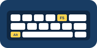

Meu primeiro post
Por: Kaic
Boas-vindas ao meu novo blog! Aqui vou compartilhar dicas de programação e curiosidades da área de tecnologia.
Vou compartilhar conhecimentos sobre tecnologia e programação
Por: Kaic
Boas-vindas ao meu novo blog! Aqui vou compartilhar dicas de programação e curiosidades da área de tecnologia.
Por: Kaic
Toda página web usa três linguagens juntas: o HTML cria a estrutura, o CSS cuida do visual e o JavaScript dá vida às interações, como os botões de curtir aqui embaixo.
Por: Kaic
Curtidas são divertidas, mas não medem o nosso valor. Por isso, neste blog cada pessoa só pode curtir uma vez, e pode desfazer a curtida clicando de novo.
Por: Kaic

Durante o curso aprendi alguns atalhos que deixam a programação bem mais rápida: